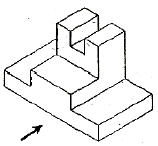
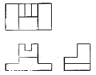
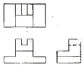
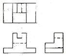
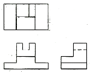
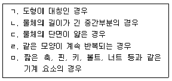
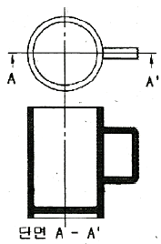

압연기능사 (2012-04-08 기출문제)
1과목: 금속재료일반
1. 3~5%Ni, 1%Si을 첨가한 Cu 합금에 3~6%Al을 첨가한 합금으로 CA 합금이라 하며 스프링재료로 사용되는 것은?
- 문쯔메탈
- 코슨합금
- 길딩메탈
- 커트리지 브라스
(정답률: 74%)

2. 인장 시험에서 시험편이 파단될 때의 최대 인장 하중(Pmax)을 평행부의 원단면적(A0)으로 나눈 값은?
- 인장 강도
- 항복점
- 연신율
- 단면 수축률
(정답률: 71%)
3. 보통 주철에 Ni을 첨가하였을 때의 설명으로 옳은 것은?
- 흑연화를 저지한다.
- 칠(chill)화를 돕는다.
- 절삭성을 좋게 한다.
- 펄라이트와 흑연을 조대화 한다.
(정답률: 73%)
4. 주철의 상(相)중 시멘타이트의 화학식으로 옳은 것은?
- FeC
- Fe3C
- Fe3P
- Fe3O2
(정답률: 80%)
5. 단위포(단위격자)의 한 모서리의 길이를 무엇이라 하는가?
- 격자상수
- 배위수
- 다결정립
- 밀러상수
(정답률: 88%)
6. 재료를 내력보다 작은 응력을 장시간 작용하면 변형이 진행되는 현상을 시험하는 시험법은?
- 압축시험
- 커핑시험
- 경도시험
- 크리프시험
(정답률: 84%)
7. 다음 중 비감쇠능이 큰 제진합금으로 가장 우수한 것은?
- 탄소강
- 회주철
- 고속도강
- 합금공구강
(정답률: 68%)
8. 다음 중 Ti 및 Ti 합금에 대한 설명으로 틀린 것은?
- Ti 의 비중은 약 4.54 정도이다.
- 용융점이 높고 열전도율이 낮다.
- Ti 은 화학적으로 매우 반응성이 강하나 내식성은 우수하다.
- Ti 의 재료 중에 O2 와 N2가 증가함에 따라 강도와 경도는 감소되나 전연성은 좋아진다.
(정답률: 69%)
9. 주요성분이 Ni-Fe 합금인 불변강의 종류가 아닌 것은?
- 인바
- 모넬메탈
- 엘린바아
- 플래티나이트
(정답률: 70%)
10. 황동의 가공재, 특히 관, 봉 등에서 일종의 응력부식 균열로 잔류응력에 기인되어 나타나는 균열은?
- 자연균열
- 탈아연부식균열
- 편정반응균열
- 고온탈아연부식균열
(정답률: 69%)
11. 순철이 910℃에서 Ac3 변태를 할 때 결정격자의 변화로 옳은 것은?
- BCT - FCC
- BCC - FCC
- FCC - BCC
- FCC - BCT
(정답률: 74%)
12. 탄소강의 표준 조직을 얻기 위해 오스테나이트화 온도에서 공기 중에 냉각하는 열처리 방법은?
- 노멀라이징(Normalizing)
- 템퍼링(Tempering)
- 어닐링(Annealling)
- 퀜칭(Quenching)
(정답률: 76%)
13. 스퍼 기어 제도에서 피치원은 어떤 선으로 그리는 가?
- 가는 실선
- 굵은 실선
- 가는 은선
- 가는 일점쇄선
(정답률: 58%)
14. A4 가로 제도용지를 좌측에 철할 때 여백의 크기가 좌측으로 25㎜, 우측으로 10㎜, 위쪽으로 10㎜, 아래쪽으로 10㎜일 때 윤곽선 내부의 넓이는?
- 49780mm2
- 51680mm2
- 52630mm2
- 62370mm2
(정답률: 56%)
15. 투상도의 표시 방법에 관한 설명 중 옳은 것은?
- 투상도의 수는 많이 그릴수록 이해하기 쉽다.
- 한 도면 안에서도 이해하기 쉽게 정투상법을 혼용 한다.
- 주투상도만으로 표시할 수 있으면 다른 투상도는 생략 한다.
- 가공을 하기 위한 도면은 제도자만이 알기 쉽게 그린다.
(정답률: 73%)
2과목: 금속제도
16. 화살표를 정면으로 하였을때 3각법으로 옳게 투상한 것은?





(정답률: 74%)
17. 도면에 기입된 “5 -ø-20드릴”을 옳게 설명한 것은?
- 드릴 구멍이 15개이다.
- 직경 5㎜인 드릴 구멍이 20개이다.
- 직경 20㎜인 드릴 구멍이 5개이다.
- 직경 20㎜ 드릴 구멍의 간격이 5㎜이다.
(정답률: 89%)
18. [보기]에서 도면을 작성할 때 도형의 일부를 생략할 수 있는 경우를 모두 나열한 것은?

- ㄱ, ㄴ, ㄷ
- ㄱ, ㄴ, ㄹ
- ㄴ, ㄷ, ㅁ
- ㄱ, ㄴ, ㄷ, ㄹ, ㅁ
(정답률: 79%)
19. 다음 중 미터 사다리꼴나사를 나타내는 표시법은?
- M8
- TW10
- Tr102
- 1 - 8 UNC
(정답률: 78%)
20. 구멍과 축의 끼워맞춤 종류 중 항상 죔새가 생기는 끼워맞춤은?
- 헐거운 끼워맞춤
- 억지 끼워맞춤
- 중간 끼워맞춤
- 미끄럼 끼워맞춤
(정답률: 79%)
21. 한 도면에서 두 종류 이상의 선이 같은 장소에 겹치게 될 때 도면 작성 선의 우선순위로 옳은 것은?
- 외형선 → 숨은선 → 절단선 → 중심선
- 외형선 → 중심선 → 숨은선 → 절단선
- 중심선 → 숨은선 → 절단선 → 외형선
- 중심선 → 외형선 → 숨은선 → 절단선
(정답률: 77%)
22. 가공 방법을 도면에 지시하는 경우 리이밍의 약호는?
- FP
- FB
- FR
- FS
(정답률: 80%)
23. 한국산업표준에서 일반적 규격으로 제도 통칙은 어디에 규정되어 있는가?
- KS A 0001
- KS B 0001
- KS A 00⑤
- KS B 00⑤
(정답률: 81%)
24. 그림과 같은 단면도의 종류로 옳은 것은?

- 온단면도
- 한쪽단면도
- 회전단면도
- 계단단면도
(정답률: 66%)
25. 열연판의 스케일 중 염산과 가장 잘 반응하며, 전체 스케일 중 95% 정도인 것은?
- Fe2O3
- Fe3O4
- FeO
- Fe2O4
(정답률: 64%)
26. 저급탄화수소가 주성분이며 발열량이 9500~1⑤00 kcal/Nm3 정도인 연료가스는?
- 고로가스
- 천연가스
- 코크스로가스
- 석유 정제 정유가스
(정답률: 74%)
27. 소성 가공에서 이용되는 성질이 아닌 것은?
- 전성
- 연성
- 취성
- 가단성
(정답률: 76%)
28. 공형압연 설계의 원칙을 설명한 것 중 틀린 것은?
- 공형각부의 감면율을 가급적 균등하게 한다.
- 공형형상은 되도록 단순화하고 직선으로 한다.
- 가능한 직접 압하를 피하고 간접 압하를 이용하도록 설계한다.
- 플랜지의 높이를 내고 싶을 때에는 초기금형에서 예리한 홈을 넣는다.
(정답률: 80%)
29. 응력을 제거 했을 때 시편이 원래의 모양과 크기로 회복될 수 있는 변형은?
- 소성변형
- 탄성변형
- 공칭변형
- 인장변형
(정답률: 77%)
30. 열연 사상압연에서 두께, 폭, 온도 등 최종제품을 압연하기 위한 사상압연 압연스케쥴 작성시 고려할 항목 중 중요도가 가장 낮은 것은?
- 탄소 당량
- 조압연 최종 두께
- 가열로 장입 온도
- 사상압연 목표 온도
(정답률: 54%)
3과목: 압연기술
31. 냉연강판의 용접성에 영향을 미치는 인자가 아닌 것은?
- 치수 불량
- 탈산 부족
- 내부 결함
- 표면 청정도
(정답률: 59%)
32. 비열이 0.9cal/g·℃인 물질 100g을 20℃에서 910℃까지 높이는데 필요한 열량은 몇 kcal 인가?
- 60.1kcal
- -60.1kcal
- 80.1kcal
- -80.1kcal
(정답률: 78%)
33. T형강 압연에서 돌출부 높이를 얻기가 어려울 때는 공형 설계를 어떻게 해야 하는가?
- 미리 돌출부의 반대쪽에 카운터 플랜지를 설정한다.
- 돌출부와 연결된 부분의 살을 두껍게 한다.
- 수직롤과 수평롤의 배치를 알맞게 한다.
- 공형 간격을 상하 교대로 취한다.
(정답률: 69%)
34. 에지 스캐브(edge scab)의 발생 원인이 아닌 것은?
- 슬래브 코너부 또는 측면에 발생한 크랙이 압연될 때
- 슬래브의 손질이 불완전하거나 스카핑이 불량할 때
- 슬래브 끝 부분 온도 강하로 압연 중 폭 방향의 균일한 연신이 발생할 때
- 제강 중 불순물의 분리 부상이 부족하여 강중에 대형 불순물 또는 기포가 존재할 때
(정답률: 64%)
35. 두께 170㎜, 폭 330㎜의 소재를 압하율 23%로 압연하였을 때 폭이 1.5%넓혀(spread)졌다면 압연 후 제품의 두께 몇 폭의 크기는 약 얼마인가?
- 두께 : 131㎜, 폭 : 335㎜
- 두께 : 142㎜, 폭 : 325㎜
- 두께 : 156㎜, 폭 : 316㎜
- 두께 : 172㎜, 폭 : 306㎜
(정답률: 58%)
36. 대구경관을 생산할 때 쓰이며, 강대를 나선형으로 감으면서 아크 용접하는 방법으로 외경 치수를 마음대로 선택할 수 있는 강관 제조법은?
- 단접법에 의한 강관 제조
- 롤 벤더(roll bender) 강관 제조
- 스파이럴(spiral)강관 제조
- 전기저항 용접법에 의한 강관 제조
(정답률: 85%)
37. 산세 작업시 산세 강판의 과산세 방지를 위해 산액에 첨가하는 약품은?
- 염산(HCI)
- 계면 활성제
- 부식 억제제
- 황산(H2SO4)
(정답률: 78%)
38. 압연재가 롤사이를 통과할 때의 변화가 아닌 것은?
- 두께의 감소
- 길이의 증가
- 조직의 조대화
- 단면수축률의 감소
(정답률: 69%)
39. 금속의 판재를 압연할 때 열간압연과 냉간압연을 구분 하는 것은?
- 변태 온도
- 용융 온도
- 연소 온도
- 재결정 온도
(정답률: 92%)
40. 접촉각(α)와 마찰계수(μ)에 따른 압연에 대한 설명으로 옳은 것은?
- 마찰계수 μ를 0(zero)으로 하면 접촉각 α가 커진다.
- tanα가 마찰계수 μ보다 크면 압연이 잘 된다.
- 롤 지름을 크게 하면 접촉각 α가 커진다.
- 압하량을 작게 하면 접촉각 α가 작아진다.
(정답률: 52%)
41. 냉연강판의 결함 중 표면 결함에 해당되지 않는 것은?
- 곱쇠
- 롤마크
- 파이프
- 긁힌 흠
(정답률: 76%)
42. 롤의 회전수가 같은 한 쌍의 작업 롤에서 상부 롤의 지름이 하부 롤의 지름보다 클 때 소재의 머리부분에서 일어나는 현상은?
- 변화없다.
- 압연재가 하향한다.
- 압연재가 상향한다.
- 캠버(Camber)가 발생된다.
(정답률: 77%)
43. 냉간 강판의 청정 작업 순서로 옳은 것은?
- 알칼리액 침적→스프레이→전해세정→브러싱→수세→건조
- 알칼리액 침적→브러싱→스프레이→전해세정→건조→수세
- 알칼리액 침적→스프레이→브러싱→전해세성→수세→건조
- 알칼리액 침적→전해세정→브러싱→스프레이→건조→수세
(정답률: 71%)
44. 냉간 압연기에서는 압연시에 주로 소재의 Edge측 의 결함에 의한 판파단 현상이 발생되는데 판파단을 최소화하기 위한 조치 방법 중 틀린 것은?
- 소재를 취급시 Edge부의 파손을 최소화 한다.
- Work Roll의 Bending을 높여 작업을 실시한다.
- 장력이 센터(center)부에 많이 걸리도록 작업한다.
- 냉연 입축 공정에서의 소재 검사 및 수입 작업을 철저히 한다.
(정답률: 58%)
45. 고강도 냉연강판의 강화기구 중 고용체강화에 대한 설명으로 옳은 것은?
- Ti, Nb, V 등의 탄, 질화물에 의한 강화이다.
- 석출물이 전위의 이동을 방해하여 강도를 상승시키는 강하이다.
- C, N 등 침입형 원소 및 Si, Mn 등 치환형 원소에 의한 강화이다.
- 베이나이트와 마텐자이트 단상 혹은 페라이트와 이러한 변태조직의 복합조직에 의한 강화이다.
(정답률: 65%)
4과목: 압연설비
46. 후판의 평탄도 불량 대책으로 틀린 것은?
- 적정 압하량 준수
- 권취온도의 점건
- 패스 스케쥴 변경
- 슬래브의 균일한 가열
(정답률: 55%)
47. 강판을 폭이 좁은 형상의 띠 모양으로 절단 가공하여 감아 놓은 강대는?
- 후프(hoop)
- 슬래브(slab)
- 틴 바(tin bar)
- 스켈프(skelp)
(정답률: 73%)
48. 조질압연의 목적 및 압연방법에 대한 설명 중 틀린 것은?
- 스트립의 형상을 교정한다.
- 재료의 기계적 성질을 개선한다.
- 스트립의 표면을 양호하게 하여 적당한 조도를 부여한다.
- 15~30%이상의 압하를 주어 항복점 연신을 제거한다.
(정답률: 69%)
49. 압연기에서 사용되는 자동제어 용어 중 정상상태에서 시스템에 주어진 입력량의 변화에 대한 출력량의 변화를 나타내는 용어는?
- 게인(gain)
- 외란(disturbacne)
- 허비시간(dead time)
- 시간상수(time constant)
(정답률: 73%)
50. 압연기의 피니언의 기어윤활방법으로 많이 사용되는 것은?
- 침적급유
- 강제순환급유
- 오일링급유
- 그리이스급유
(정답률: 67%)
51. 압연기의 일반적인 구동 순서로 옳은 것은?
- 전동기→스핀들→이음부→커플링→스탠드의 롤
- 전동기→이음부→스핀들→커플링→스탠드의 롤
- 전동기→커플링→스핀들→이음부→스탠드의 롤
- 전동기→스탠드의 롤→이음부→커플링→스핀들
(정답률: 60%)
52. 3대식 연속 가열로에서 장입측에서부터 대(帶)의 순서로 옳은 것은?
- 가열대→예열대→균열대
- 균열대→가열대→예열대
- 예열대→가열대→균열대
- 예열대→균열대→가열대
(정답률: 76%)
53. 재해예방의 4대 원칙에 해당되지 않는 것은?
- 손실우연의 원칙
- 예방가능의 원칙
- 원인연계의 원칙
- 관리부재의 원칙
(정답률: 73%)
54. 압연기 입측설비의 구성요소가 아닌 것은?
- 루퍼(Looper)
- 웰더(Welder)
- 텐션 릴(Tension Reel)
- 페이 오프 릴(pay off Reel)
(정답률: 44%)
55. 강재 열간압연기의 롤 재질로 적합하지 않은 것은?
- 주철롤
- 칠드롤
- 주강롤
- 알루미늄롤
(정답률: 82%)
56. 윤활유 사용 목적으로 틀린 것은?
- 접촉하는 과열부분 냉각
- 기계윤활 부분에 녹발생 방지
- 하중이 큰 회전체 응력 집중
- 두 물체 사이의 마찰 경감
(정답률: 79%)
57. 용접기(Flash Butt Welder)의 특징을 설명한 것 중 틀린 것은?
- 특수강 용접에 우수하다.
- 용접시간이 짧아 대량생산에 적합하다.
- 열영향부가 적고 금속조직의 변화가 적다.
- 용접봉이나 플러스를 필요로 하지 않기 때문에 비용이 적다.
(정답률: 54%)
58. 열간압연시의 코일중량이 대체적으로 동일할 때 가장 긴 라인이 필요한 조압연기 배열 방식은?
- 반연속식
- 전연속식
- 쓰리쿼터식
- 스리쿼터식+크로스 커플식
(정답률: 72%)
59. 다음 중 대량생산에 적합하며 열연 사상압연에 많이 사용되는 압연기는?
- 데라 압연기
- 클러스터 압연기
- 라우드식 압연기
- 4단 연속 압연기
(정답률: 82%)
60. 압연판의 포면에 발생한 미세한 균열을 검사하고 자 한다. 적합한 비파괴 검사법은 무엇인가?
- 육안 검사법
- 초음파탐상검사법
- 방사선투과시험법
- 형광침투탐상검사법
(정답률: 65%)